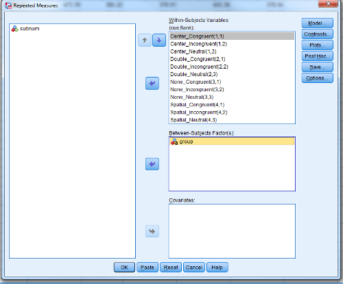

Analysis of Variance
Table of Contents
Doing ANOVA in R
There are three ways to perform analysis of variance (ANOVA) in R.
base::aov();car::Anova(); andez::ezANOVA().
(Note xxx::yyy() syntax means the function yyy() in package xxx; base is just base R, i.e., the function comes pre-installed with R so to use the function you don’t have to load in any packages.)
If you have balanced data, the factors are uncorrelated (e.g. due to random assignment), and none of your within-subject factors has more that 2 levels, you can use aov().
If your goal is to replicate the output from SPSS, then your best bet is to use ez::ezANOVA(), because it provides Greenhouse-Geiser correction in case you have more than three levels of a within-subject factor, and handles unbalanced data more easily.
If your goal is to learn a flexible way of analysis that can accommodate all different types of data, forget about ANOVA and learn about mixed-effects modeling. Just to get this off my chest, here are four reasons why you don’t really want to use ANOVA with psychological data:
- Doesn’t adequately handle more than one random factor at a time, and therefore, cannot properly generalize over both subjects and stimuli;
- Dealing with unbalanced data can be complicated;
- Requires that your dependent variable is continuous, and therefore is not ideal for discrete scale data or binary data;
- Difficult to deal with continuous predictors.
If you have complicated designs and need follow-up tests, there is a newer package, afex that might be worth looking into. See this blogpost by afex author Henrik Singmann on the functionality of afex. To quote Singmann:
In the default settings, afex automatically uses appropriate orthogonal contrasts for factors, transforms numerical variables into factors, uses so-called Type III sums of squares, and allows for any number of factors including repeated-measures (or within-subjects) factors and mixed/split-plot designs. Together this guarantees that the ANOVA results correspond to the results obtained from commercial statistical packages such as SPSS or SAS.
The decomposition matrix and sums of squares in one-way ANOVA
Background
A key way that we attempt to learn from data is to build a statistical model that captures relationships among variables. If you want to learn more about one-factor ANOVA as a kind of a General Linear Model (GLM), check out this free PDF textbook by Miller and Haden (2006) (Chs. 1-3).
A good way to learn about linear models is to do things “by hand” on a toy dataset.
The goals of this section are:
- to learn how to estimate model parameters from data;
- to learn how to derive a decomposition matrix that expresses each observation as a linear sum of model components and error;
- to practice entering data into a “tibble” (tidyverse data frame).
One-factor ANOVA: Worked example
First we will walk through an example step by step. Then you will perform the steps in R. We will assume that you are now familiar with estimation equations, decomposition matrices, and sums of squares. You can find further examples and step-by-step walkthroughs in Miller and Haden (2006), Chapter 3.
Let’s assume that you have data from a one-factor design with three-levels. To make this example concrete, let’s pretend you are studying how consuming food before an exam affects student performance. You randomly assign 12 participants to three separate groups (four per group): (1) no food, glass of water only (Control); (2) all-you-can-eat buffet (Buffet); and (3) side salad (Salad). (We chose a small number of participants to simplify the computations; obviously if you were going to do this study in real life, you’d need far more than 12 participants to make this worthwhile). For your dependent variable, you measure the number of questions answered correctly on an a difficult exam (100 points possible). The exam is administered right after consuming the meal (or drinking water, for the control group).
This is called a one-factor design because there is a single factor, which we might call “pre-exam consumption”, that has three different levels: water, buffet, and salad. We want to test whether there is any difference in exam performance across the levels of this factor.
Here’s how the exam performance looks for each of the three groups:
- Control: 37, 80, 64, 51
- Buffet: 33, 47, 55, 41
- Salad: 59, 23, 50, 60
The GLM that we will fit to these data is:
\(Y_{ij} = \mu + A_i + S(A)_{ij}\)
Where:
- \(Y_{ij}\) is the observed value for observation \(j\) of group \(i\);
- \(\mu\) (pronounced “mu”) is the population grand mean (estimated by the sample grand mean);
- \(A_i\) is the deviation of the population mean of group \(i\) from this grand mean;
- \(S(A)_{ij}\) is the error or “residual”, defined as the observed value (\(Y_{ij}\)) minus the model prediction (\(\hat{Y}_{ij}\)).
Results to reproduce
We will use ezANOVA() from the ez package to perform a one-way ANOVA. Then we will go back and calculate all of the results by hand (feel free to skip the latter part and jump ahead to the next section if you’re not interested in that).
Let’s first type our data into a tibble. Make it look like the table below (Hint: Use the rep() to save typing; see ?rep for examples)
Y A sub_id
1 37 A1 1
2 80 A1 2
3 64 A1 3
4 51 A1 4
5 33 A2 5
6 47 A2 6
7 55 A2 7
8 41 A2 8
9 59 A3 9
10 23 A3 10
11 50 A3 11
12 60 A3 12
dat <- tibble(Y = c(37, 80, 64, 51, 33, 47, 55, 41, 59, 23, 50, 60),
A = rep(c("A1", "A2", "A3"), each = 4),
sub_id = 1:12)
Now look at the help page for ez::ezANOVA() and try to figure out how to run the ANOVA. Your results should look like so:
Warning: Converting "sub_id" to factor for ANOVA. Warning: Converting "A" to factor for ANOVA. Coefficient covariances computed by hccm() $ANOVA Effect DFn DFd SSn SSd F p p<.05 ges 1 A 2 9 416 2164 0.8650647 0.4532825 0.1612403 $`Levene's Test for Homogeneity of Variance` DFn DFd SSn SSd F p p<.05 1 2 9 100.6667 825 0.5490909 0.595658
ezANOVA(dat, Y, wid = .(sub_id), between = .(A), detailed = TRUE)
Estimating model components
Now we are going to calculate these results “by hand”. (Feel free to skip this part)
We begin by applying the estimation equations. Our estimate of the population grand mean \(\mu\), will be based on the grand mean of the sample. We will call this \(\hat{\mu}\). The “hat” that \(\mu\) is wearing (\(\hat{\mu}\)) is just there to remind us that it is not the actual population mean, but an estimate of that value derived from our sample.
The estimation equations for our model are:
\(\mu = Y_{..}\)
\(\hat{A}_i = Y_{i.} - \hat{\mu}\)
\(\widehat{S(A)}_{ij} = Y_{ij} - (\hat{\mu} + \hat{A}_i) = Y_{ij} - \hat{\mu} - \hat{A}_i\)
where
- \(Y_{..}\) is the mean of all 12 observations in the sample, and
- \(Y_{i.}\) is the mean of the 4 observations in group \(i\).
Applying these estimation equations to the data above yields the following decomposition matrix:
i j Yij mu Ai err 1 1 1 37 50 8 -21 2 1 2 80 50 8 22 3 1 3 64 50 8 6 4 1 4 51 50 8 -7 5 2 1 33 50 -6 -11 6 2 2 47 50 -6 3 7 2 3 55 50 -6 11 8 2 4 41 50 -6 -3 9 3 1 59 50 -2 11 10 3 2 23 50 -2 -25 11 3 3 50 50 -2 2 12 3 4 60 50 -2 12
Note that in this table, mu is \(\hat{\mu}\), Ai is \(\hat{A}_i\), and err is \(\widehat{S(A)}_{ij}\). Take a few moments to understand how this table expresses each of the 12 observed values in our example (the $Yij$s) in terms of the linear model \(Y_{ij} = \mu + A_i + S(A)_{ij}\).
Recreate decomposition matrix from the raw data
For this part, your task is to reproduce the tibble shown above, reproduced here:
i j Yij mu Ai err 1 1 1 37 50 8 -21 2 1 2 80 50 8 22 3 1 3 64 50 8 6 4 1 4 51 50 8 -7 5 2 1 33 50 -6 -11 6 2 2 47 50 -6 3 7 2 3 55 50 -6 11 8 2 4 41 50 -6 -3 9 3 1 59 50 -2 11 10 3 2 23 50 -2 -25 11 3 3 50 50 -2 2 12 3 4 60 50 -2 12
You will do this by typing the observed values into a tibble, and then writing code to add columns with estimates of the individual components (feel free to copy the code you already wrote above). At the end, your table should look exactly like the one above.
You already know how to create a tibble (don’t forget to load the tidyverse package first). In case you need to refresh your memory, see [page 2 of this cheatsheet on data input in R](https://github.com/rstudio/cheatsheets/raw/master/data-import.pdf).
Step 1: Create tibble
Create a tibble named dmx (for decomposition matrix). It will eventually contain all of the columns in the one above, but for now, just create the columns i, j, and Yij. You should just type in the values for Yij.
dmx <- tibble(i = NA, j = NA, Yij = NA)
rep(1:3, each = 4)
library("tidyverse") dmx <- tibble(i = rep(1:3, each = 4), j = rep(1:4, times = 3), Yij = c(37, 80, 64, 51, 33, 47, 55, 41, 59, 23, 50, 60)) # TYPE THE VALUES
Step 2: Estimate \(\mu\)
Add a column to the table, called mu representing \(\hat{\mu}\). Call the resulting table dmx2. Remember that you can add a column to a table using mutate().
dmx2 <- dmx %>% mutate(mu = ???)
dmx2 <- dmx %>% mutate(mu = mean(Yij))
Step 3: Enter the estimates \(\hat{A}_1\), \(\hat{A}_2\), \(\hat{A}_3\)
Add a column to the table dmx2 called Ai, with the three estimates for \(\hat{A}_i\). Store the resulting tibble in dmx3.
- don’t forget to
ungroup()at the end of the pipeline
dmx3 <- dmx2 %>% group_by(i) %>% # calculate different values for each i mutate(Ai = mean(Yij) - mu) %>% ungroup()
Step 4: Calculate \(\widehat{S(A)}_{ij}\)s
Now add a column err to dmx3 and store the result in dmx4. The column err should contain the residuals (the difference between the observed and fitted values)
\(\widehat{S(A)}_{ij} = Y_{ij} - \hat{Y}_{ij}\)
\(\hat{Y}_{ij} = \hat{\mu} + \hat{A}_i\)
dmx4 <- dmx3 %>% mutate(err = Yij - (mu + Ai)) dmx4
i j Yij mu Ai err 1 1 1 37 50 8 -21 2 1 2 80 50 8 22 3 1 3 64 50 8 6 4 1 4 51 50 8 -7 5 2 1 33 50 -6 -11 6 2 2 47 50 -6 3 7 2 3 55 50 -6 11 8 2 4 41 50 -6 -3 9 3 1 59 50 -2 11 10 3 2 23 50 -2 -25 11 3 3 50 50 -2 2 12 3 4 60 50 -2 12
Display dmx4 in the console and compare it to the table above. How did you do?
Step 5: Sums of squares
Sums of squares are used in calculations for performing tests on model components.
Square the values in the columns Yij, mu, Ai, and err in dmx4, then sum up the squared values for each of these columns. Here is an example of how you would square a value x in R: x^2. The ^2 means take x to the power of 2. So typing 3^2 in the console will give you 9 (try it if you’re unsure).
dmx4 %>% mutate(Yij2 = Yij^2, ...)
summarise(ss_Y = sum(Yij2), ss_mu = ...)
sstbl <- dmx4 %>% mutate(Yij2 = Yij^2, mu2 = mu^2, Ai2 = Ai^2, err2 = err^2) %>% select(Yij2, mu2, Ai2, err2) %>% summarise(ss_Y = sum(Yij2), ss_mu = sum(mu2), ss_Ai = sum(Ai2), ss_err = sum(err2)) ## here is a super cool way to do the same thing, ## using dplyr's "scoping" technique ## (see ?dplyr::scoped and ?dplyr::summarise_all) sstbl <- dmx4 %>% select(Yij:err) %>% summarise_all(funs(sum(.^2))) sstbl
Yij mu Ai err
1 32580 30000 416 2164
Final step: Calculate \(F\) statistics
\(F = \frac{MS_{A}}{MS_{err}}\)
\(MS_A = \frac{MS_A}{df_A}\)
\(MS_{err} = \frac{MS_{err}}{df_{err}}\)
Get the p-value using the appropriate probability distribution for the \(F\) distribution (Hint: remember dnorm(), pnorm(), and qnorm()?)
Your results should exactly reproduce the ones we got from ezANOVA().
?pf
ms_a <- (sstbl %>% pull(Ai)) / 2L # 2 dfs ms_err <- (sstbl %>% pull(err)) / 9L # 9 dfs f_ratio <- ms_a / ms_err p_value <- pf(f_ratio, 2, 9, lower.tail = FALSE) cat("F(2, 9) =", round(f_ratio, 2), ", p =", round(p_value, 3), "\n")
F(2, 9) = 0.87 , p = 0.453
Mixed-design ANOVA using ez::ezANOVA()
Let’s look at a more complicate experiment design.
The ANT dataset
We will be using simulated data from the Attention Network Test (ANT) by Fan et al. (2002), which is included as part of the ez package.
?ez::ANT
ANT package:ez R Documentation
ANT data
Description:
_Simulated_ data from then Attention Network Test (see reference
below), consisting of 2 within-Ss variables (“cue” and “flank”), 1
between-Ss variable (“group”) and 2 dependent variables (response
time, “rt”, and whether an error was made, “error”)
Usage:
data(ANT)
Format:
A data frame with 5760 observations on the following 10 variables.
‘subnum’ a factor with levels ‘1’ ‘2’ ‘3’ ‘4’ ‘5’ ‘6’ ‘7’ ‘8’ ‘9’
‘10’ ‘11’ ‘12’ ‘13’ ‘14’ ‘15’ ‘16’ ‘17’ ‘18’ ‘19’ ‘20’
‘group’ a factor with levels ‘Control’ ‘Treatment’
‘block’ a numeric vector
‘trial’ a numeric vector
‘cue’ a factor with levels ‘None’ ‘Center’ ‘Double’ ‘Spatial’
‘flank’ a factor with levels ‘Neutral’ ‘Congruent’ ‘Incongruent’
‘location’ a factor with levels ‘down’ ‘up’
‘direction’ a factor with levels ‘left’ ‘right’
‘rt’ a numeric vector
‘error’ a numeric vector
Author(s):
Michael A. Lawrence <email: mike.lwrnc@gmail.com>
Visit the ‘ez’ development site at <
http://github.com/mike-lawrence/ez>
for the bug/issue tracker and the link to the mailing list.
References:
J Fan, BD McCandliss, T Sommer, A Raz, MI Posner (2002). Testing
the efficiency and independence of attentional networks. _Journal
of Cognitive Neuroscience_, *14*, 340-347.
Examples:
data(ANT)
head(ANT)
ezPrecis(ANT)
Explore the data
Let’s set up the session environment. The dataset is stored somewhere in the package, and we need to make it accessible to our session using the data() function.
library("ez") # for inferential analysis using ANOVA library("tidyverse") data(ANT)
ez::ezPrecis() and dplyr::glimpse() give useful information about the dataset.
ezPrecis(ANT)
Data frame dimensions: 5760 rows, 10 columns type missing values min max subnum factor 0 20 1 20 group factor 0 2 Control Treatment block numeric 0 6 1 6 trial numeric 0 48 1 48 cue factor 0 4 None Spatial flank factor 0 3 Neutral Incongruent location factor 0 2 down up direction factor 0 2 left right rt numeric 0 5760 179.5972 657.6986 error numeric 0 2 0 1
glimpse(ANT)
Observations: 5,760 Variables: 10 $ subnum <fct> 1, 1, 1, 1, 1, 1, 1, 1, 1, 1, 1, 1, 1, 1, 1, 1, 1, 1, 1, ... $ group <fct> Treatment, Treatment, Treatment, Treatment, Treatment, Tr... $ block <int> 1, 1, 1, 1, 1, 1, 1, 1, 1, 1, 1, 1, 1, 1, 1, 1, 1, 1, 1, ... $ trial <int> 1, 2, 3, 4, 5, 6, 7, 8, 9, 10, 11, 12, 13, 14, 15, 16, 17... $ cue <fct> None, Center, Double, Spatial, None, Center, Double, Spat... $ flank <fct> Neutral, Neutral, Neutral, Neutral, Congruent, Congruent,... $ location <fct> up, up, up, up, up, up, up, up, up, up, up, up, down, dow... $ direction <fct> left, left, left, left, left, left, left, left, left, lef... $ rt <dbl> 398.6773, 389.1822, 333.2186, 419.7640, 446.4754, 338.976... $ error <dbl> 0, 0, 0, 0, 0, 0, 0, 0, 0, 0, 0, 0, 0, 0, 0, 0, 1, 0, 0, ...
Now let’s keep only the accurate trials:
## keep only the accurate trials ANT_acc <- filter(ANT, error == 0)
How many subjects do we have?
ANT_acc %>% count(subnum)
subnum n 1 1 264 2 2 255 3 3 261 4 4 258 5 5 251 6 6 259 7 7 259 8 8 265 9 9 261 10 10 264 11 11 266 12 12 260 13 13 256 14 14 237 15 15 263 16 16 264 17 17 260 18 18 259 19 19 264 20 20 265
Let’s see which factors are within and which are between.
ANT_acc %>% count(subnum, group, cue, flank) %>% filter(subnum %in% c(1, 11)) %>% print(n = 100)
subnum group cue flank n 1 1 Treatment None Neutral 18 2 1 Treatment None Congruent 21 3 1 Treatment None Incongruent 23 4 1 Treatment Center Neutral 22 5 1 Treatment Center Congruent 23 6 1 Treatment Center Incongruent 23 7 1 Treatment Double Neutral 24 8 1 Treatment Double Congruent 21 9 1 Treatment Double Incongruent 22 10 1 Treatment Spatial Neutral 22 11 1 Treatment Spatial Congruent 21 12 1 Treatment Spatial Incongruent 24 13 11 Control None Neutral 19 14 11 Control None Congruent 23 15 11 Control None Incongruent 23 16 11 Control Center Neutral 23 17 11 Control Center Congruent 24 18 11 Control Center Incongruent 22 19 11 Control Double Neutral 24 20 11 Control Double Congruent 23 21 11 Control Double Incongruent 19 22 11 Control Spatial Neutral 21 23 11 Control Spatial Congruent 22 24 11 Control Spatial Incongruent 23
So, we have a mixed design with one between factor (group) and two within factors (cue, flank). Both of our within-subject factors have more than two levels, so we’re going to want to correct for possible violations of sphericity (Greenhouse-Geiser). Just to make things more fun, the data are unbalanced now that we’ve thrown out trials with inaccurate responses. So if we can handle these data, we can handle anything…
Before doing any analysis, let’s look at the cell means.
ANT_means <- ANT_acc %>% group_by(group, cue, flank) %>% summarise(mRT = mean(rt)) %>% ungroup()
group cue flank mRT
1 Control None Neutral 427.9266
2 Control None Congruent 429.4866
3 Control None Incongruent 498.9557
4 Control Center Neutral 378.6429
5 Control Center Congruent 380.7638
6 Control Center Incongruent 483.3961
7 Control Double Neutral 379.5458
8 Control Double Congruent 372.6635
9 Control Double Incongruent 473.1597
10 Control Spatial Neutral 340.7174
11 Control Spatial Congruent 343.4821
12 Control Spatial Incongruent 411.3912
13 Treatment None Neutral 428.1812
14 Treatment None Congruent 426.1165
15 Treatment None Incongruent 495.8052
16 Treatment Center Neutral 382.8072
17 Treatment Center Congruent 376.5433
18 Treatment Center Incongruent 452.4431
19 Treatment Double Neutral 369.8689
20 Treatment Double Congruent 378.3121
21 Treatment Double Incongruent 446.6856
22 Treatment Spatial Neutral 339.3939
23 Treatment Spatial Congruent 337.8150
24 Treatment Spatial Incongruent 414.6278
Plot them…
ggplot(ANT_means, aes(flank, mRT, colour = cue)) + geom_line(aes(group = cue)) + geom_point(aes(shape = cue), size = 3) + facet_wrap(~group)
Analysis using ezANOVA()
So what might we expect from this plot? Main effects of flank and cue, maybe even a three-way interaction?
OK let’s check out the ez::ezANOVA() documentation before running our function.
?ez::ezANOVA
ezANOVA package:ez R Documentation
Compute ANOVA
Description:
This function provides easy analysis of data from factorial
experiments, including purely within-Ss designs (a.k.a. “repeated
measures”), purely between-Ss designs, and mixed
within-and-between-Ss designs, yielding ANOVA results, generalized
effect sizes and assumption checks.
Usage:
ezANOVA(
data
, dv
, wid
, within = NULL
, within_full = NULL
, within_covariates = NULL
, between = NULL
, between_covariates = NULL
, observed = NULL
, diff = NULL
, reverse_diff = FALSE
, type = 2
, white.adjust = FALSE
, detailed = FALSE
, return_aov = FALSE
)
Arguments:
data: Data frame containing the data to be analyzed.
dv: Name of the column in ‘data’ that contains the dependent
variable. Values in this column must be numeric.
wid: Name of the column in ‘data’ that contains the variable
specifying the case/Ss identifier. This should be a unique
value per case/Ss.
within: Names of columns in ‘data’ that contain predictor variables
that are manipulated (or observed) within-Ss. If a single
value, may be specified by name alone; if multiple values,
must be specified as a .() list.
within_full: Same as within, but intended to specify the full within-Ss
design in cases where the data have not already been
collapsed to means per condition specified by ‘within’ and
when ‘within’ only specifies a subset of the full design.
within_covariates: Names of columns in ‘data’ that contain predictor
variables that are manipulated (or observed) within-Ss and
are to serve as covariates in the analysis. If a single
value, may be specified by name alone; if multiple values,
must be specified as a .() list.
between: Names of columns in ‘data’ that contain predictor variables
that are manipulated (or observed) between-Ss. If a single
value, may be specified by name alone; if multiple values,
must be specified as a .() list.
between_covariates: Names of columns in ‘data’ that contain predictor
variables that are manipulated (or observed) between-Ss and
are to serve as covariates in the analysis. If a single
value, may be specified by name alone; if multiple values,
must be specified as a .() list.
observed: Names of columns in ‘data’ that are already specified in
either ‘within’ or ‘between’ that contain predictor variables
that are observed variables (i.e. not manipulated). If a
single value, may be specified by name alone; if multiple
values, must be specified as a .() list. The presence of
observed variables affects the computation of the generalized
eta-squared measure of effect size reported by ‘ezANOVA’.
diff: Names of any variables to collapse to a difference score. If
a single value, may be specified by name alone; if multiple
values, must be specified as a .() list. All supplied
variables must be factors, ideally with only two levels
(especially if setting the ‘reverse_diff’ argument to TRUE).
reverse_diff: Logical. If TRUE, triggers reversal of the difference
collapse requested by ‘diff’. Take care with variables with
more than 2 levels.
type: Numeric value (either ‘1’, ‘2’ or ‘3’) specifying the Sums of
Squares “type” to employ when data are unbalanced (eg. when
group sizes differ). ‘type = 2’ is the default because this
will yield identical ANOVA results as ‘type = 1’ when data
are balanced but ‘type = 2’ will additionally yield various
assumption tests where appropriate. When data are unbalanced,
users are warned that they should give special consideration
to the value of ‘type’. ‘type=3’ will emulate the approach
taken by popular commercial statistics packages like SAS and
SPSS, but users are warned that this approach is not without
criticism.
white.adjust: Only affects behaviour if the design contains only
between-Ss predictor variables. If not FALSE, the value is
passed as the white.adjust argument to ‘Anova’, which
provides heteroscedasticity correction. See ‘Anova’ for
details on possible values.
detailed: Logical. If TRUE, returns extra information (sums of squares
columns, intercept row, etc.) in the ANOVA table.
return_aov: Logical. If TRUE, computes and returns an aov object
corresponding to the requested ANOVA (useful for computing
post-hoc contrasts).
Details:
ANCOVA is implemented by first regressing the DV against each
covariate (after collapsing the data to the means of that
covariate's levels per subject) and subtracting from the raw data
the fitted values from this regression (then adding back the mean
to maintain scale). These regressions are computed across Ss in
the case of between-Ss covariates and computed within each Ss in
the case of within-Ss covariates.
Value:
A list containing one or more of the following components:
ANOVA: A data frame containing the ANOVA results.
Mauchly's Test for Sphericity: If any within-Ss variables with >2
levels are present, a data frame containing the results of
Mauchly's test for Sphericity. Only reported for effects >2
levels because sphericity necessarily holds for effects with
only 2 levels.
Sphericity Corrections: If any within-Ss variables are present, a data
frame containing the Greenhouse-Geisser and Huynh-Feldt
epsilon values, and corresponding corrected p-values.
Levene's Test for Homogeneity: If the design is purely between-Ss, a
data frame containing the results of Levene's test for
Homogeneity of variance. Note that Huynh-Feldt corrected
p-values where the Huynh-Feldt epsilon >1 will use 1 as the
correction epsilon.
aov: An aov object corresponding to the requested ANOVA.
Some column names in the output data frames are abbreviated to
conserve space:
DFn Degrees of Freedom in the numerator (a.k.a. DFeffect).
DFd Degrees of Freedom in the denominator (a.k.a. DFerror).
SSn Sum of Squares in the numerator (a.k.a. SSeffect).
SSd Sum of Squares in the denominator (a.k.a. SSerror).
F F-value.
p p-value (probability of the data given the null hypothesis).
p<.05 Highlights p-values less than the traditional alpha level of .05.
ges Generalized Eta-Squared measure of effect size (see in references below: Bakeman, 2005).
GGe Greenhouse-Geisser epsilon.
p[GGe] p-value after correction using Greenhouse-Geisser epsilon.
p[GGe]<.05 Highlights p-values (after correction using Greenhouse-Geisser epsilon) less than the traditional alpha level of .05.
HFe Huynh-Feldt epsilon.
p[HFe] p-value after correction using Huynh-Feldt epsilon.
p[HFe]<.05 Highlights p-values (after correction using Huynh-Feldt epsilon) less than the traditional alpha level of .05.
W Mauchly's W statistic
Warning:
Prior to running (though after obtaining running ANCOVA
regressions as described in the ‘details’ section), ‘dv’ is
collapsed to a mean for each cell defined by the combination of
‘wid’ and any variables supplied to ‘within’ and/or ‘between’
and/or ‘diff’. Users are warned that while convenient when used
properly, this automatic collapsing can lead to inconsistencies if
the pre-collapsed data are unbalanced (with respect to cells in
the full design) and only the partial design is supplied to
‘ezANOVA’. When this is the case, use ‘within_full’ to specify the
full design to ensure proper automatic collapsing.
Author(s):
Michael A. Lawrence <email: mike.lwrnc@gmail.com>
Visit the ‘ez’ development site at <
http://github.com/mike-lawrence/ez>
for the bug/issue tracker and the link to the mailing list.
Note that we should be using Type III ss if we want to replicate SPSS output.
(Note that this is using RM-ANOVA and not mixed-model ANOVA; in the latter case you would have different error terms for the different effects.)
rt_anova <- ezANOVA(ANT_acc, rt, subnum, within = .(cue, flank),
between = group, type = 3)
print(rt_anova)
Warning: Collapsing data to cell means. *IF* the requested effects are a subset of the full design, you must use the "within_full" argument, else results may be inaccurate. $ANOVA Effect DFn DFd F p p<.05 ges 2 group 1 18 18.430592 4.377562e-04 * 0.07633358 3 cue 3 54 516.605213 1.005518e-39 * 0.89662286 5 flank 2 36 1350.598810 1.386546e-34 * 0.92710583 4 group:cue 3 54 2.553236 6.497492e-02 0.04110445 6 group:flank 2 36 8.768499 7.900829e-04 * 0.07627434 7 cue:flank 6 108 5.193357 9.938494e-05 * 0.11436699 8 group:cue:flank 6 108 6.377225 9.012515e-06 * 0.13686958 $`Mauchly's Test for Sphericity` Effect W p p<.05 3 cue 0.7828347 0.5366835 4 group:cue 0.7828347 0.5366835 5 flank 0.8812738 0.3415406 6 group:flank 0.8812738 0.3415406 7 cue:flank 0.1737053 0.1254796 8 group:cue:flank 0.1737053 0.1254796 $`Sphericity Corrections` Effect GGe p[GG] p[GG]<.05 HFe p[HF] 3 cue 0.8652559 1.115029e-34 * 1.0239520 1.005518e-39 4 group:cue 0.8652559 7.472046e-02 1.0239520 6.497492e-02 5 flank 0.8938738 3.763312e-31 * 0.9858964 3.964046e-34 6 group:flank 0.8938738 1.297752e-03 * 0.9858964 8.438369e-04 7 cue:flank 0.6022111 1.546166e-03 * 0.7721473 4.745714e-04 8 group:cue:flank 0.6022111 3.424499e-04 * 0.7721473 7.170939e-05 p[HF]<.05 3 * 4 5 * 6 * 7 * 8 *
Compare to SPSS output
First we have to reshape the data from long to wide. Better to do this in R using tidyr::spread() than to try to do this in SPSS!
ANT_agg <- ANT_acc %>% group_by(subnum, group, cue, flank) %>% summarise(RT = mean(rt)) %>% ungroup() for_spss <- ANT_agg %>% mutate(cond = paste(cue, flank, sep = "_")) %>% select(subnum, group, cond, RT) %>% spread(cond, RT) write.csv(for_spss, "for_spss.csv", row.names = FALSE) glimpse(for_spss)
Observations: 20 Variables: 14 $ subnum <fct> 1, 2, 3, 4, 5, 6, 7, 8, 9, 10, 11, 12, 13, 14, ... $ group <fct> Treatment, Treatment, Treatment, Treatment, Tre... $ Center_Congruent <dbl> 368.6432, 389.7828, 367.9923, 383.2157, 394.601... $ Center_Incongruent <dbl> 473.3917, 455.6889, 436.5402, 438.4868, 471.384... $ Center_Neutral <dbl> 385.2220, 374.2402, 371.2286, 384.8149, 378.096... $ Double_Congruent <dbl> 378.9103, 384.1513, 356.3303, 399.3815, 370.688... $ Double_Incongruent <dbl> 455.3791, 432.9680, 432.6974, 445.8616, 447.052... $ Double_Neutral <dbl> 378.9357, 356.9811, 392.3132, 370.2583, 370.638... $ None_Congruent <dbl> 423.8810, 441.9487, 428.1394, 433.2586, 436.916... $ None_Incongruent <dbl> 490.8676, 483.2877, 503.2587, 498.5326, 499.016... $ None_Neutral <dbl> 433.4563, 436.4319, 428.6568, 415.5254, 429.138... $ Spatial_Congruent <dbl> 350.1803, 337.6057, 334.5602, 342.8093, 329.854... $ Spatial_Incongruent <dbl> 407.1928, 421.0479, 431.4388, 407.0074, 418.313... $ Spatial_Neutral <dbl> 328.0655, 339.3997, 331.3369, 320.7324, 332.479...
Here is how the data look:
And then we choose Repeated Measures from the analysis menu:

Define our within IVs:

Results:


Mixed-effects analysis
library("afex") ## see ?afex::mixed ## NB: random-intercept-only model justified here because of ## pre-aggregation of the data mod <- mixed(RT ~ group * cue * flank + (1 | subnum), ANT_agg, type = 3, method = "KR") print(mod)
Loading required package: lme4
Loading required package: Matrix
Attaching package: ‘Matrix’
The following object is masked from ‘package:tidyr’:
expand
Loading required package: emmeans
************
Welcome to afex. For support visit: http://afex.singmann.science/
- Functions for ANOVAs: aov_car(), aov_ez(), and aov_4()
- Methods for calculating p-values with mixed(): 'KR', 'S', 'LRT', and 'PB'
- 'afex_aov' and 'mixed' objects can be passed to emmeans() for follow-up tests
- Get and set global package options with: afex_options()
- Set orthogonal sum-to-zero contrasts globally: set_sum_contrasts()
- For example analyses see: browseVignettes("afex")
************
Attaching package: ‘afex’
The following object is masked from ‘package:lme4’:
lmer
Contrasts set to contr.sum for the following variables: group, cue, flank, subnum
Fitting one lmer() model. [DONE]
Calculating p-values. [DONE]
Mixed Model Anova Table (Type 3 tests, KR-method)
Model: RT ~ group * cue * flank + (1 | subnum)
Data: ANT_agg
Effect df F p.value
1 group 1, 18 17.85 *** .0005
2 cue 3, 198 624.48 *** <.0001
3 flank 2, 198 1373.60 *** <.0001
4 group:cue 3, 198 3.09 * .03
5 group:flank 2, 198 8.92 *** .0002
6 cue:flank 6, 198 4.65 *** .0002
7 group:cue:flank 6, 198 5.71 *** <.0001
---
Signif. codes: 0 ‘***’ 0.001 ‘**’ 0.01 ‘*’ 0.05 ‘+’ 0.1 ‘ ’ 1